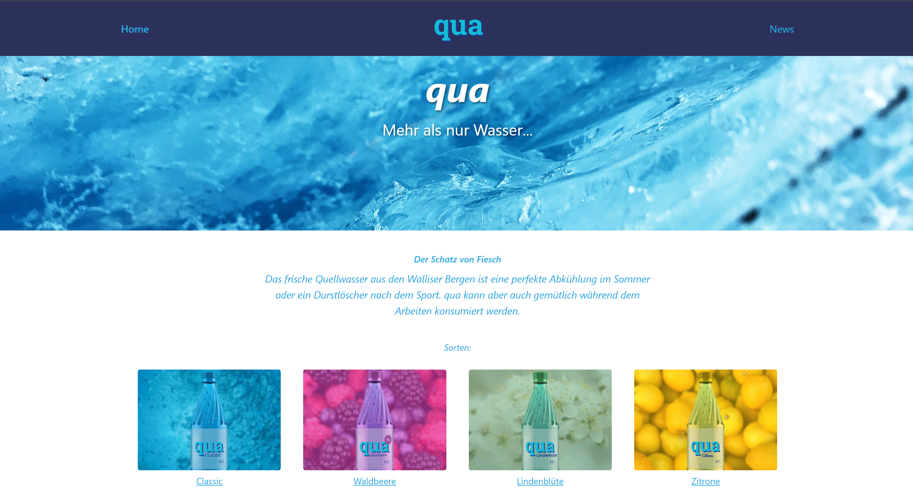

Qua Wasser
Beschreibung:
Qua Wasser ist eine Webseite für ein Wasserunternehmen. Sie präsentiert das Unternehmen, seine Produkte und Dienstleistungen in einem modernen, ansprechenden Design mit klarem Fokus auf Qualität und Nachhaltigkeit.
Meine Aufgaben:
Ich gestaltete und entwickelte die gesamte Webseite, vom Layout und Design über die HTML-Struktur bis zur CSS-Umsetzung und JavaScript-Interaktionen. Besonderer Wert wurde auf ein ansprechendes, markenkonformes Design gelegt.
Was ich gelernt habe:
Dieses Projekt stärkte meine Fähigkeiten im Webdesign und der Frontend-Entwicklung. Ich lernte, eine konsistente visuelle Identität durch gezielten Einsatz von Farben, Typografie und Layout zu schaffen.